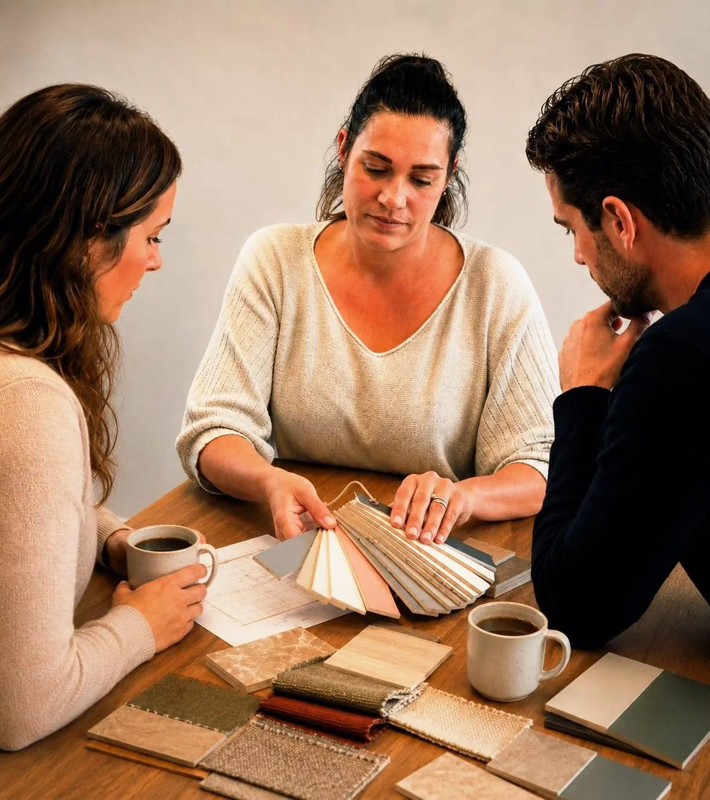

Een mooi resultaat begint lang voor de eerste verflaag.
Wij begeleiden u van kleuradvies tot een perfect afgewerkt eindresultaat. Met persoonlijk advies, duidelijke communicatie en een ervaren team zorgen we voor een zorgeloos traject van begin tot einde.
Wij bezorgen Schilderkracht tot de vierde macht
- Stielkennisvoor een vakkundige uitvoering.
- Servicevoor een zorgeloze samenwerking.
- Snelheidvoor een vlotte en duidelijke planning.
- Stijlvoor een afwerking tot in de kleinste details.
Zo creëren we ruimtes waar mensen graag wonen, werken en leven.
Wat we voor u doen

Binnenschilderwerken
Van kleuradvies tot perfecte afwerking, alles voor een interieur dat klopt.
Lees meer
Buitenschilderwerken
Bescherming, uitstraling en vakmanschap voor uw gevel en buitenschrijnwerk.
Lees meer
Decoratieve technieken
Unieke afwerkingen met karakter, structuur en beleving.
Lees meer
Gordijnen
Sfeer, privacy en afwerking perfect afgestemd op uw interieur.
Lees meer
Lamellen
Modern, functioneel en perfect afgestemd op uw ruimte.
Lees meerAdvies & vakmanschap
Bij SDAD begeleiden we particulieren en bedrijven bij binnen- en buitenschilderwerken, decoratieve technieken en interieurafwerking (gordijnen en lamellen). Van kleuradvies tot oplevering zorgen we voor een resultaat waarin kwaliteit, uitstraling en vakmanschap samenkomen.
Met meer dan 25 jaar ervaring en een team van gespecialiseerde schilders beschikken we over de kennis en expertise om elk project professioneel uit te voeren. Of het nu gaat om een woning, kantoor, praktijkruimte, horecazaak of residentieel project, we denken mee over de juiste keuzes en zorgen voor een afwerking die jarenlang blijft overtuigen.
Wat ons onderscheidt, is onze persoonlijke aanpak. We luisteren naar uw wensen, adviseren waar nodig en communiceren helder gedurende het volledige traject. Zo weet u steeds waar u aan toe bent en kan u rekenen op een zorgeloze samenwerking van eerste gesprek tot oplevering.
De basis van dat vertrouwen is eenvoudig: we doen wat we zeggen en zeggen wat we doen.


Daarom kiezen klanten voor SDAD


Een mooi resultaat begint met een goed gesprek.
Tijdens een vrijblijvend plaatsbezoek luisteren we naar uw wensen, geven we professioneel advies en bekijken we samen de mogelijkheden voor uw schilderwerken of interieurafwerking.